🏙️ City-Block Asset Pipeline
Live observability — generated 2026-09-16 00:47 PDT
3D modeling pipeline — RUNNING
worker mtick-20260916-0742
heartbeat Sep 16, 00:46
working on 24-cobble-straight · phase building · rev bs1
blender headless build: slab + boolean-cut grooves + cobble field
Schematic pipeline — RUNNING
worker stick-20260916-0724
heartbeat Sep 16, 00:47
working on chinatown-block-v1 · phase idle · rev 54-noodle-stall
LEFT view FROZEN (r5, judge F 9.08) — chain 3/8; next: RIGHT view
0
Review notes you pinned on entry pages are saved in this browser.
Copy them to your clipboard, then paste into chat with Kit — each note becomes a targeted fix.
Assets 53 entries

01-cafe-building
Schematics ✓3D modeling ✓Accepted ✓

02-apartment-building
Schematics ✓3D modeling · 15 revs (complete)Felix review pending

03-flower-shop
Schematics ✓3D modeling · 22 revs (complete)Felix review pending

04-grocery-store
Schematics ✓3D modeling ✓Accepted ✓
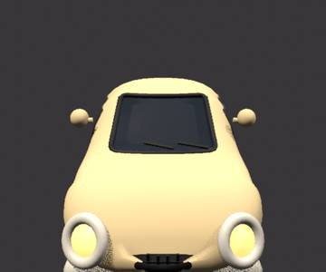
05-sedan-car
Schematics ✓3D modeling ✓Accepted ✓
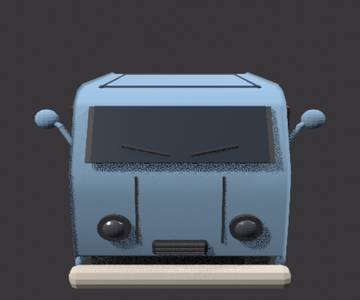
06-van
Schematics ✓3D modeling ✓Accepted ✓
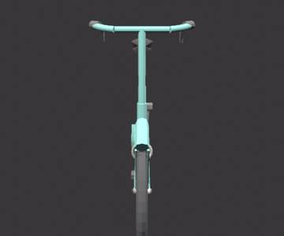
07-bicycle
Schematics ✓3D modeling ✓Accepted ✓
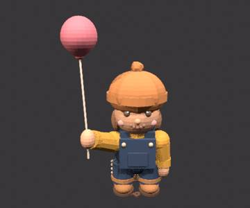
08-kid-with-balloon
Schematics ✓3D modeling ✓Accepted ✓
09-dog-walker
Schematics ✓3D modeling · 7 revs (complete)Felix review pending
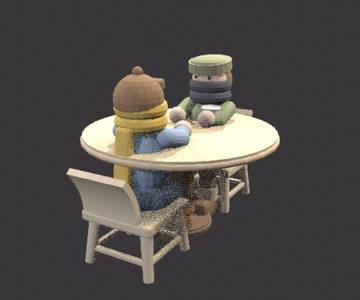
10-cafe-patrons
Schematics ✓3D modeling ✓Accepted ✓
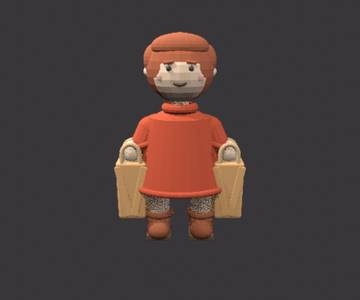
11-shopper-with-bags
Schematics ✓3D modeling ✓Accepted ✓
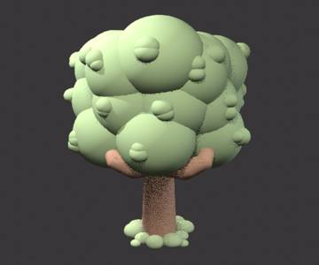
12-big-puffy-tree
Schematics ✓3D modeling ✓Accepted ✓
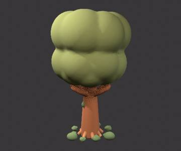
13-small-tree
Schematics ✓3D modeling ✓Accepted ✓
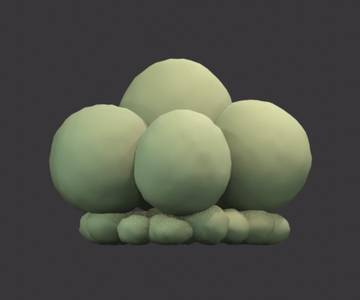
14-bush
Schematics ✓3D modeling · 4 revs (complete)Felix review pending
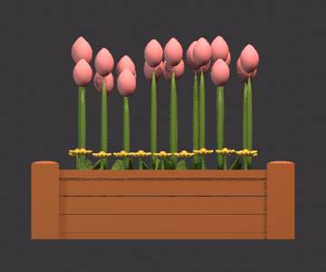
15-planter-tulips
Schematics ✓3D modeling ✓Accepted ✓
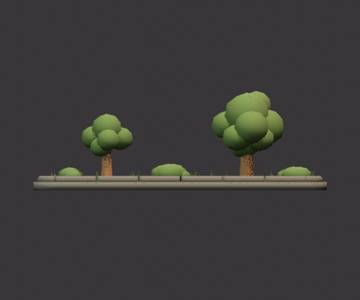
16-grass-patch
Schematics ✓3D modeling · 2 revs (complete)Felix review pending
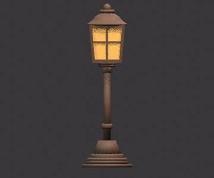
17-street-lamp
Schematics ✓3D modeling ✓Accepted ✓
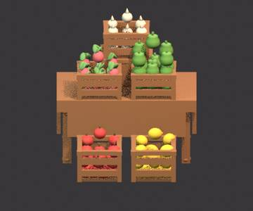
18-produce-crates
Schematics ✓3D modeling ✓Accepted ✓
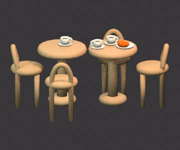
19-cafe-table-set
Schematics ✓3D modeling ✓Accepted ✓
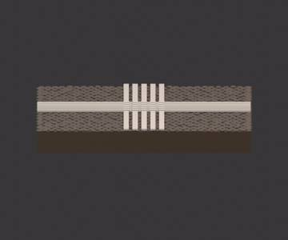
20-intersection
Schematics ✓3D modeling ✓Accepted ✓
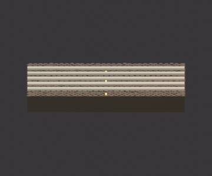
21-cobblestone-road
Schematics ✓3D modeling ✓Accepted ✓
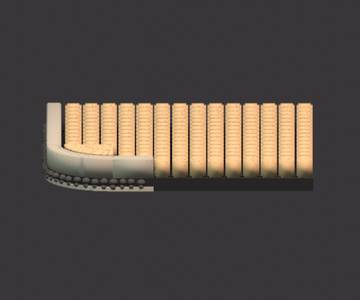
22-sidewalk-curb
Schematics ✓3D modeling ✓Accepted ✓
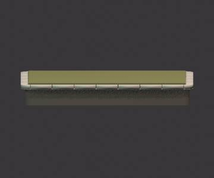
23-plinth-base
Schematics ✓3D modeling ✓Accepted ✓
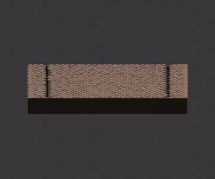
24-cobble-straight
Schematics ✓3D modeling · 1 revs (building)

25-cobble-corner
Schematics ✓3D not started

26-cobble-t-junction
Schematics ✓3D not started

27-cobble-end
Schematics ✓3D not started

28-sidewalk-straight
Schematics ✓3D not started

29-sidewalk-plain
Schematics ✓3D not started

30-business-center-tower
Schematics ✓3D not started

31-office-tower
Schematics ✓3D not started

32-offices-downtown
Schematics ✓3D not started
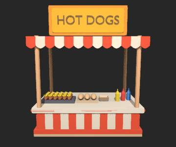
33-hot-dog-stand
Schematics ✓3D modeling · 14 revs (complete)Felix review pending
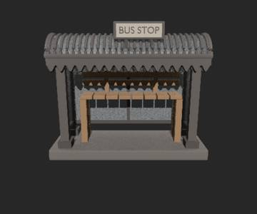
34-bus-stop-shelter
Schematics ✓3D modeling · 6 revs (complete)Felix review pending
35-traffic-light
Schematics ✓3D not started
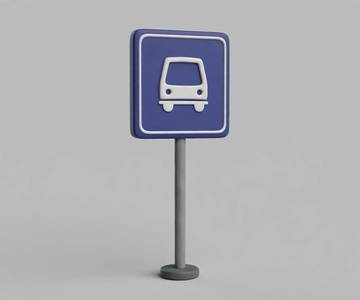
36-bus-stop-sign
Schematics ✓3D not started
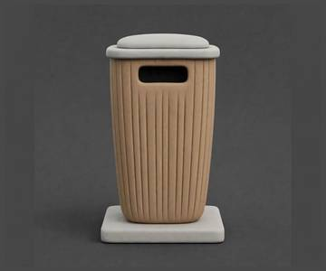
37-trash-bin
Schematics ✓3D not started
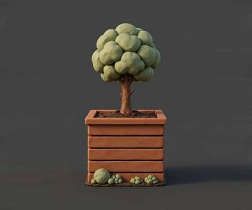
38-tree-planter-box
Schematics ✓3D not started
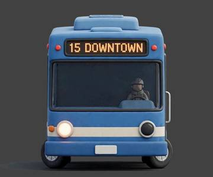
39-city-bus
Schematics ✓3D not started
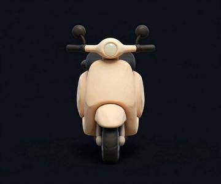
40-scooter
Schematics ✓3D not started
41-businessman-with-briefcase
Schematics ✓3D not started
42-kid-with-backpack
Schematics ✓3D not started
43-man-with-stroller
Schematics ✓3D not started
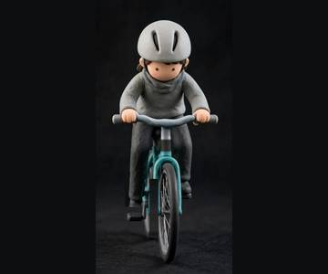
44-cyclist
Schematics ✓3D not started
45-hot-dog-vendor
Schematics ✓3D not started
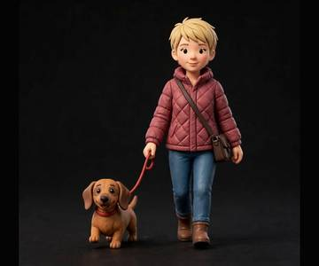
46-woman-walking-dog
Schematics ✓3D not started
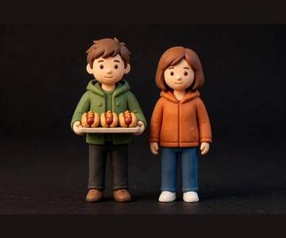
47-hot-dog-customers
Schematics ✓3D not started
48-man-reading-on-bench
Schematics ✓3D not started
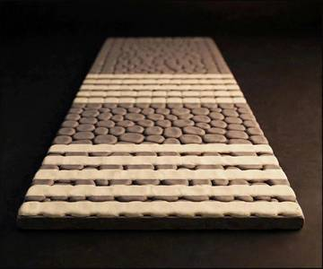
49-cobble-crosswalk
Schematics ✓3D not started
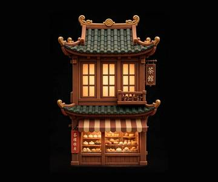
50-teahouse
Schematics ✓3D not started
51-chinatown-gate
Schematics ✓3D not started
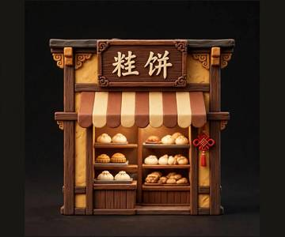
52-bakery
Schematics ✓3D not started
53-herb-shop
Schematics ✓3D not started
All times Pacific. Click an entry for the 3D viewer and side-by-side review mode.